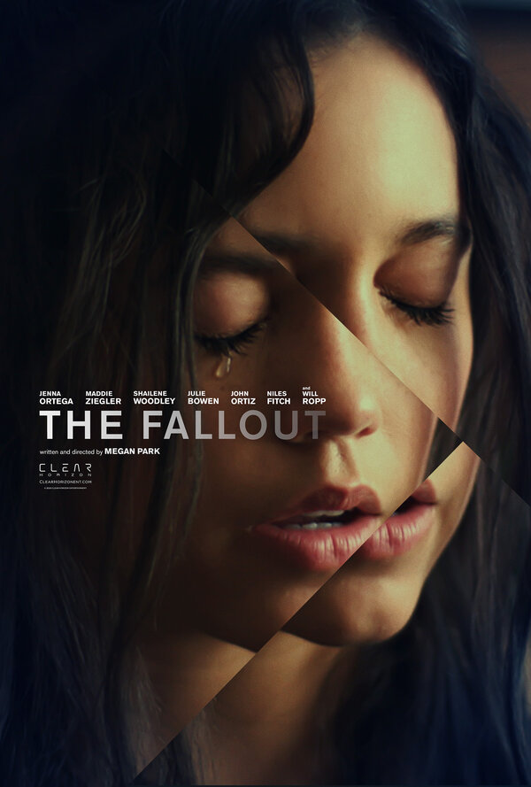

«Последствия» — американская драматическая картина 2021 года режиссёра Меган Парк. Фильм рассказывает о старшекласснице Ваде Кавелл, чья жизнь меняется после трагедии в школе. Девушка пытается справиться с пережитым, восстановить отношения с близкими и найти поддержку у людей, которые понимают её чувства. Это история о психологической травме, дружбе, взрослении и попытках вернуться к обычной жизни.
Год выхода: 2021
Жанр: драма
Режиссёр: Меган Парк
